Candidate List 20260620 Previous Day Next Day Section 1: New Sources (age<1d) Cosmological Afterglow
Section 2: Old (1-5d) sources observed last night placeholder
Section 1: New Afterglow/FBOT Cands Last Night (1)
1. ZTF26abcxqhh (FBOT?) [Back to Top] [Share] [Trigger Swift] [Fritz ] [Lasair ]RA, Dec: 277.49051, -17.28391 18h29m57.72s, -17d-17m-2.06sGalactic (l, b): 15.13527, -3.20799 ext(g-r) = 0.765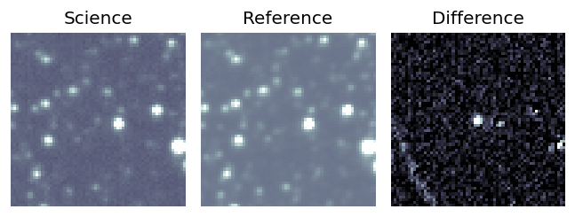
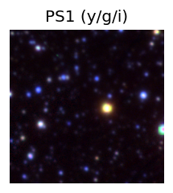
PS1: 1 source in 3 arcsec Closest: d = 3.87 arcsec photoz=0.07+/-0.02 peak abs mag = -20.06 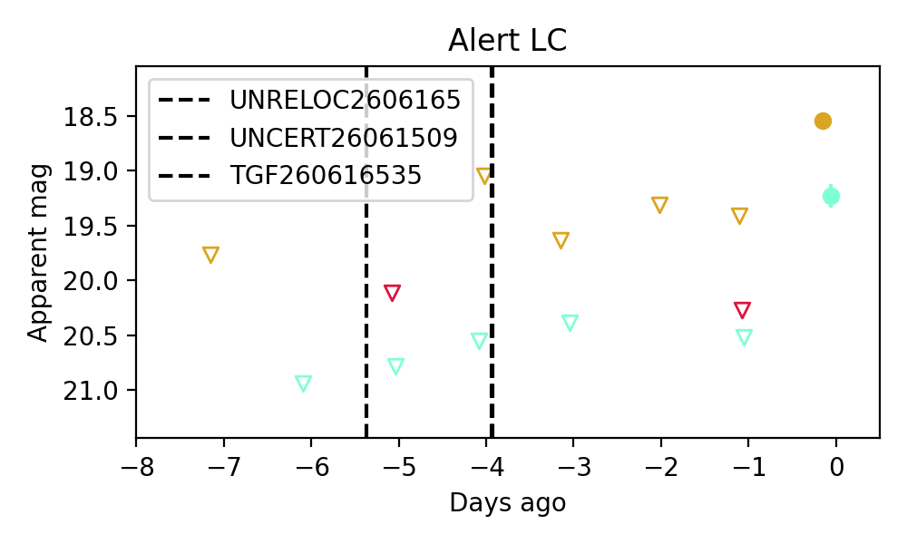
Section 2: Older Sources Observed Last Night (18)
0. ZTF26abbomsg (Afterglow?) [Back to Top] [Share] [Trigger Swift] [Fritz ] [Lasair ]RA, Dec: 325.48272, -6.17633 21h41m55.85s, -6d-10m-34.78sGalactic (l, b): 49.03802, -40.40886 ext(g-r) = 0.04peak abs mag = -18.24 peak abs mag = -18.83 LegacySurvey: 1 sources in 3 arcsec Closest: d = 0.75 arcsec, 50.1 deg (east of north) photoz=0.11 (68% bounds 0.08, 0.13), type=SER peak abs mag = -19.24 (68% bounds -18.57, -19.62) Consistent with synchrotron, g-r>0!
1. ZTF26abbrwhf (Afterglow?) [Back to Top] [Share] [Trigger Swift] [Fritz ] [Lasair ]RA, Dec: 255.19379, -18.47499 17h 0m46.51s, -18d-28m-29.97sGalactic (l, b): 3.0422, 14.32594 WARNING: 4.24 deg from ecliptic plane ext(g-r) = 0.402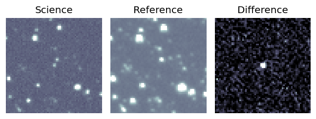
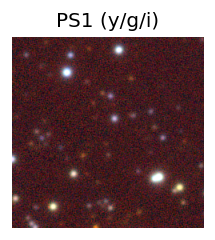
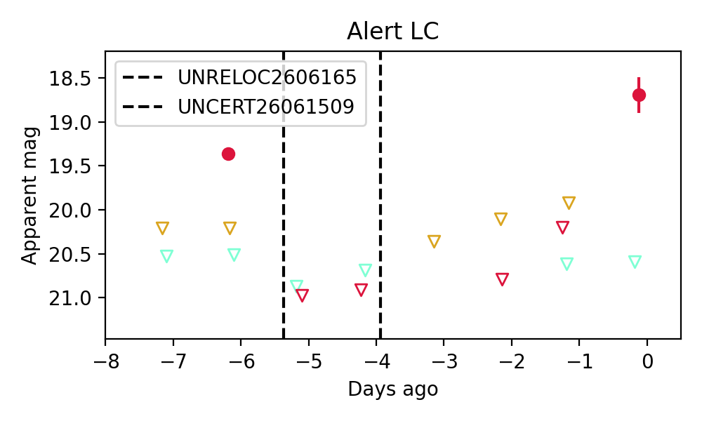
2. ZTF26abcbqux (FBOT?) [Back to Top] [Share] [Trigger Swift] [Fritz ] [Lasair ]RA, Dec: 350.42573, -6.14165 23h21m42.17s, -6d-8m-29.93sGalactic (l, b): 73.41274, -60.07713 WARNING: -1.86 deg from ecliptic plane ext(g-r) = 0.052peak abs mag = -20.23 LegacySurvey: 1 sources in 3 arcsec Closest: d = 1.22 arcsec, 172.9 deg (east of north) photoz=0.2 (68% bounds 0.16, 0.23), type=SER peak abs mag = -20.58 (68% bounds -20.15, -21.02) Consistent with synchrotron, g-r>0!
3. ZTF26abcddvj (Afterglow?) [Back to Top] [Share] [Trigger Swift] [Fritz ] [Lasair ]RA, Dec: 211.19355, 33.08729 14h 4m46.45s, 33d 5m14.25sGalactic (l, b): 57.98828, 73.08653 ext(g-r) = 0.016peak abs mag = -17.08 LegacySurvey: 1 sources in 3 arcsec Closest: d = 0.92 arcsec, 22.4 deg (east of north) photoz=0.03 (68% bounds 0.03, 0.04), type=SER peak abs mag = -15.95 (68% bounds -15.52, -16.35) Consistent with synchrotron, g-r>0!
4. ZTF26abcgajg (Afterglow?) [Back to Top] [Share] [Trigger Swift] [Fritz ] [Lasair ]RA, Dec: 286.18668, 25.0423 19h 4m44.80s, 25d 2m32.26sGalactic (l, b): 56.8262, 8.40762 ext(g-r) = 0.34 Consistent with synchrotron, g-r>0!
5. ZTF26abchxlu (FBOT?) [Back to Top] [Share] [Trigger Swift] [Fritz ] [Lasair ]RA, Dec: 161.43289, 25.53894 10h45m43.89s, 25d32m20.18sGalactic (l, b): 208.96583, 61.86246 ext(g-r) = 0.045peak abs mag = -23.71 LegacySurvey: 1 sources in 3 arcsec Closest: d = 0.29 arcsec, 195.2 deg (east of north) photoz=0.41 (68% bounds 0.14, 0.8), type=EXP peak abs mag = -22.58 (68% bounds -19.9, -24.36)
6. ZTF26abcibmm (FBOT?) [Back to Top] [Share] [Trigger Swift] [Fritz ] [Lasair ]RA, Dec: 211.92718, -10.35667 14h 7m42.52s, -10d-21m-24.00sGalactic (l, b): 331.75739, 48.2002 WARNING: 2.41 deg from ecliptic plane ext(g-r) = 0.059peak abs mag = -19.39 LegacySurvey: 1 sources in 3 arcsec Closest: d = 1.33 arcsec, 343.2 deg (east of north) photoz=0.08 (68% bounds 0.07, 0.1), type=SER peak abs mag = -19.38 (68% bounds -19.13, -19.74) Consistent with synchrotron, g-r>0!
7. ZTF26abcjqje (Afterglow?) [Back to Top] [Share] [Trigger Swift] [Fritz ] [Lasair ]RA, Dec: 227.48907, -25.016 15h 9m57.38s, -25d 0m-57.59sGalactic (l, b): 338.64277, 28.08616 ext(g-r) = 0.123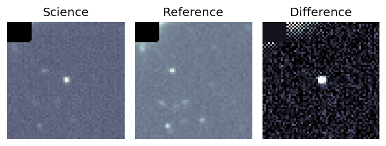
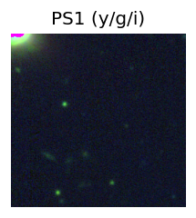
LegacySurvey: 1 sources in 3 arcsec Closest: d = 5.49 arcsec, 75.8 deg (east of north) photoz=0.79 (68% bounds 0.56, 0.9), type=PSF peak abs mag = -26.98 (68% bounds -26.06, -27.3) 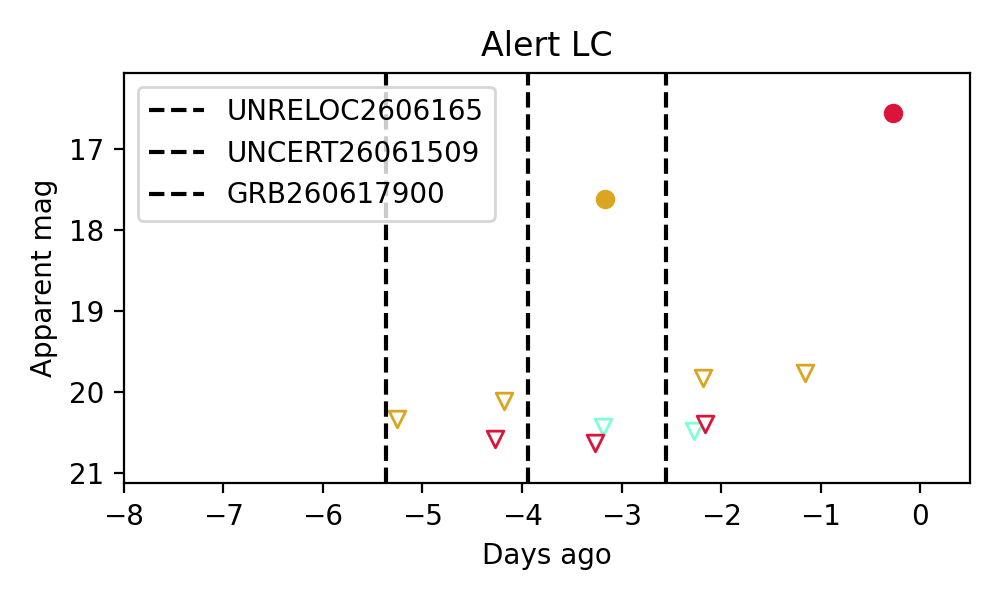
8. ZTF26abclirn (Afterglow?) [Back to Top] [Share] [Trigger Swift] [Fritz ] [Lasair ]RA, Dec: 298.52119, 3.95128 19h54m5.09s, 3d57m4.61sGalactic (l, b): 43.78313, -12.02078 ext(g-r) = 0.162peak abs mag = -19.00 PS1: 1 source in 3 arcsec Closest: d = 0.43 arcsec photoz=0.08+/-0.00 peak abs mag = -19.06 Consistent with synchrotron, g-r>0!
9. ZTF26abcqcat (Afterglow?) [Back to Top] [Share] [Trigger Swift] [Fritz ] [Lasair ]RA, Dec: 234.91827, 10.21716 15h39m40.38s, 10d13m1.77sGalactic (l, b): 18.04033, 46.98562 ext(g-r) = 0.049LegacySurvey: 1 sources in 3 arcsec Closest: d = 2.69 arcsec, 186.6 deg (east of north) photoz=0.07 (68% bounds 0.03, 0.14), type=SER peak abs mag = -17.77 (68% bounds -15.67, -19.41) Consistent with synchrotron, g-r>0!
10. ZTF26abcqesk (Afterglow?FBOT?) [Back to Top] [Share] [Trigger Swift] [Fritz ] [Lasair ]RA, Dec: 252.31072, 55.09314 16h49m14.57s, 55d 5m35.30sGalactic (l, b): 83.40401, 39.25719 ext(g-r) = 0.015LegacySurvey: 1 sources in 3 arcsec Closest: d = 0.65 arcsec, 170.1 deg (east of north) photoz=0.37 (68% bounds 0.25, 0.54), type=REX peak abs mag = -22.1 (68% bounds -21.08, -23.07) Consistent with synchrotron, g-r>0!
11. ZTF26abcqzry (Afterglow?FBOT?) [Back to Top] [Share] [Trigger Swift] [Fritz ] [Lasair ]RA, Dec: 252.88019, -25.18296 16h51m31.25s, -25d-10m-58.66sGalactic (l, b): 356.20334, 12.02984 WARNING: -2.66 deg from ecliptic plane ext(g-r) = 0.335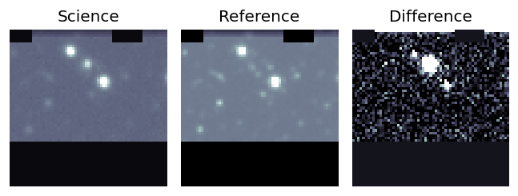
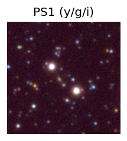
PS1: 1 source in 3 arcsec Closest: d = 2.52 arcsec photoz=0.51+/-0.08 peak abs mag = -26.64 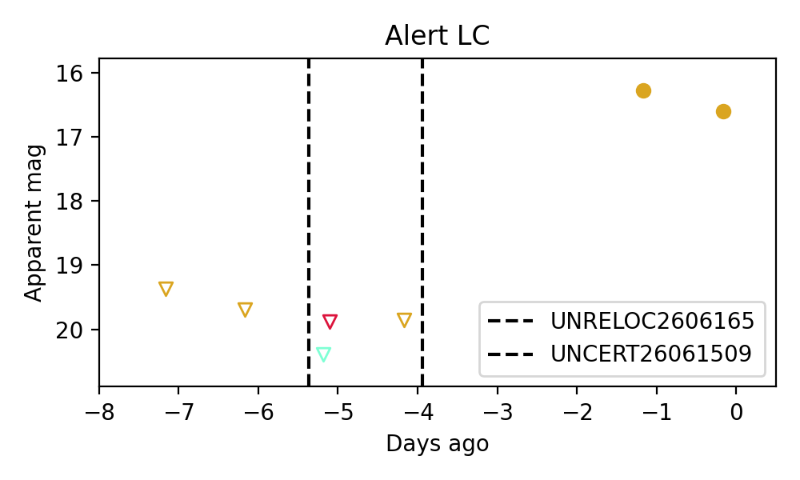
12. ZTF26abcuzpa (FBOT?) [Back to Top] [Share] [Trigger Swift] [Fritz ] [Lasair ]RA, Dec: 232.63058, 32.59795 15h30m31.34s, 32d35m52.63sGalactic (l, b): 51.80214, 55.28049 ext(g-r) = 0.025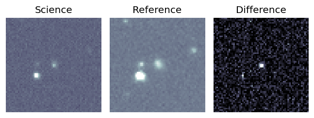
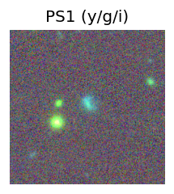
peak abs mag = -20.03 LegacySurvey: 1 sources in 3 arcsec Closest: d = 1.16 arcsec, 347.6 deg (east of north) photoz=0.09 (68% bounds 0.07, 0.11), type=SER peak abs mag = -18.73 (68% bounds -18.16, -19.24) 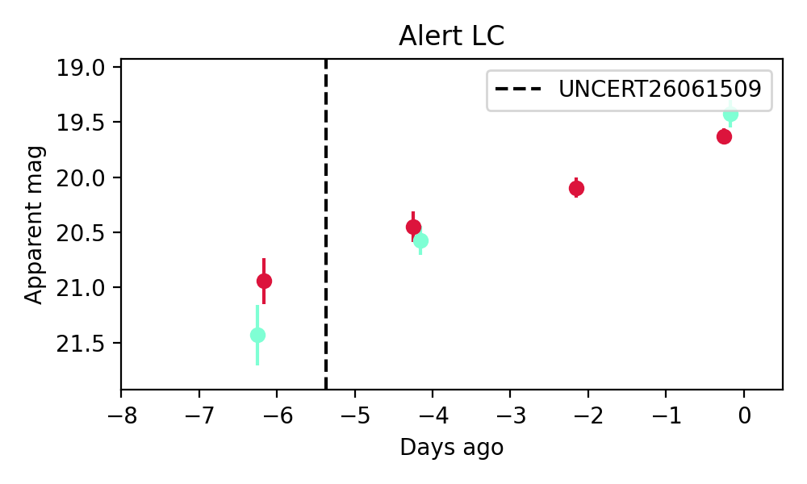
13. ZTF26abcvznh (FBOT?) [Back to Top] [Share] [Trigger Swift] [Fritz ] [Lasair ]RA, Dec: 221.19071, 9.72344 14h44m45.77s, 9d43m24.39sGalactic (l, b): 5.25953, 58.11856 ext(g-r) = 0.025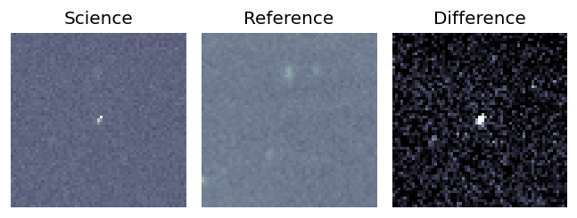
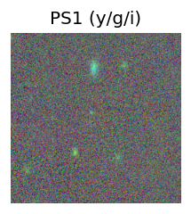
LegacySurvey: 1 sources in 3 arcsec Closest: d = 2.38 arcsec, 51.9 deg (east of north) photoz=0.43 (68% bounds 0.29, 0.74), type=PSF peak abs mag = -23.18 (68% bounds -22.15, -24.58) 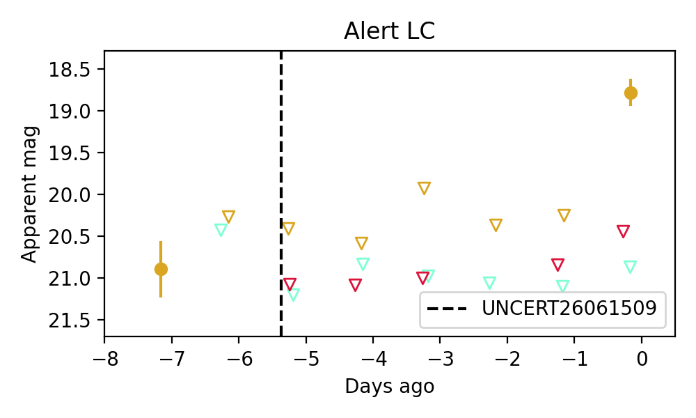
14. ZTF26abcwqyy (FBOT?) [Back to Top] [Share] [Trigger Swift] [Fritz ] [Lasair ]RA, Dec: 268.71051, 52.80132 17h54m50.52s, 52d48m4.77sGalactic (l, b): 80.51023, 29.65253 ext(g-r) = 0.044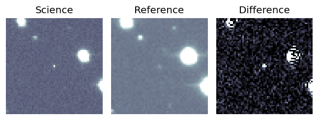
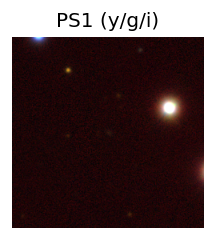
peak abs mag = -22.16 LegacySurvey: 1 sources in 3 arcsec Closest: d = 0.64 arcsec, 206.8 deg (east of north) photoz=0.24 (68% bounds 0.19, 0.31), type=EXP peak abs mag = -20.77 (68% bounds -20.21, -21.34) 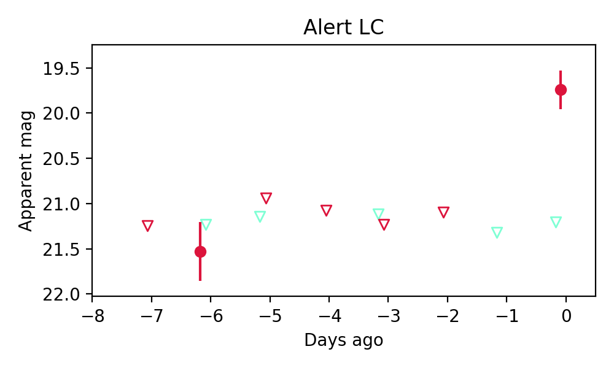
15. ZTF26abcwuji (FBOT?) [Back to Top] [Share] [Trigger Swift] [Fritz ] [Lasair ]RA, Dec: 269.13674, 51.78119 17h56m32.82s, 51d46m52.29sGalactic (l, b): 79.38547, 29.26582 ext(g-r) = 0.046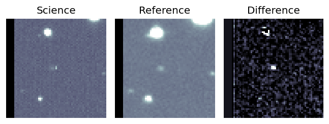
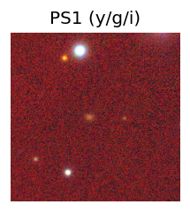
peak abs mag = -21.83 LegacySurvey: 1 sources in 3 arcsec Closest: d = 2.46 arcsec, 102.9 deg (east of north) photoz=0.36 (68% bounds 0.25, 0.42), type=EXP peak abs mag = -21.46 (68% bounds -20.53, -21.87) 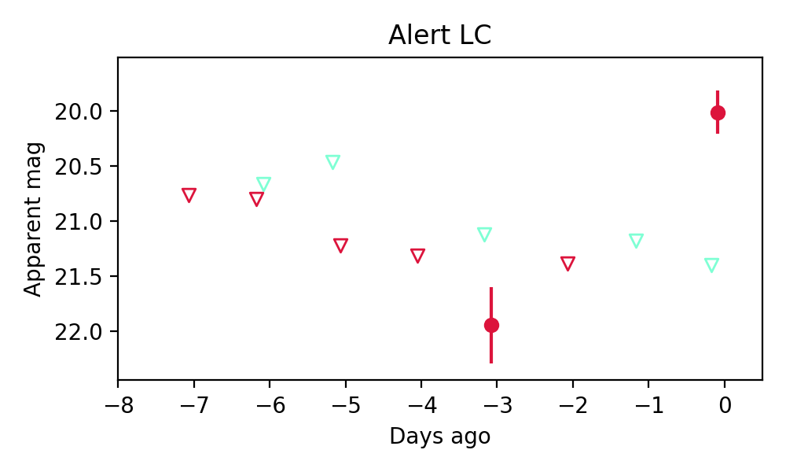
16. ZTF26abcxjoi (FBOT?) [Back to Top] [Share] [Trigger Swift] [Fritz ] [Lasair ]RA, Dec: 329.16362, 47.16809 21h56m39.27s, 47d10m5.12sGalactic (l, b): 94.75631, -5.91605 ext(g-r) = 0.219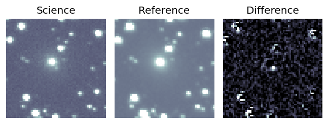
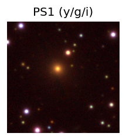
peak abs mag = -19.69 peak abs mag = -16.96 PS1: 1 source in 3 arcsec Closest: d = 5.18 arcsec photoz=0.05+/-0.00 peak abs mag = -17.24 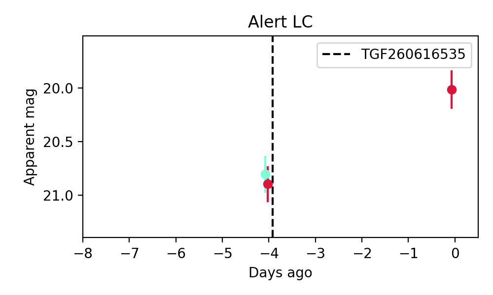
17. ZTF26abcxrqn (Afterglow?) [Back to Top] [Share] [Trigger Swift] [Fritz ] [Lasair ]RA, Dec: 278.69384, -17.93496 18h34m46.52s, -17d-56m-5.87sGalactic (l, b): 15.08173, -4.52575 ext(g-r) = 0.675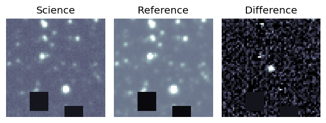
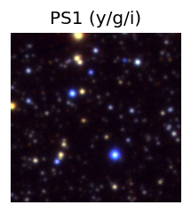
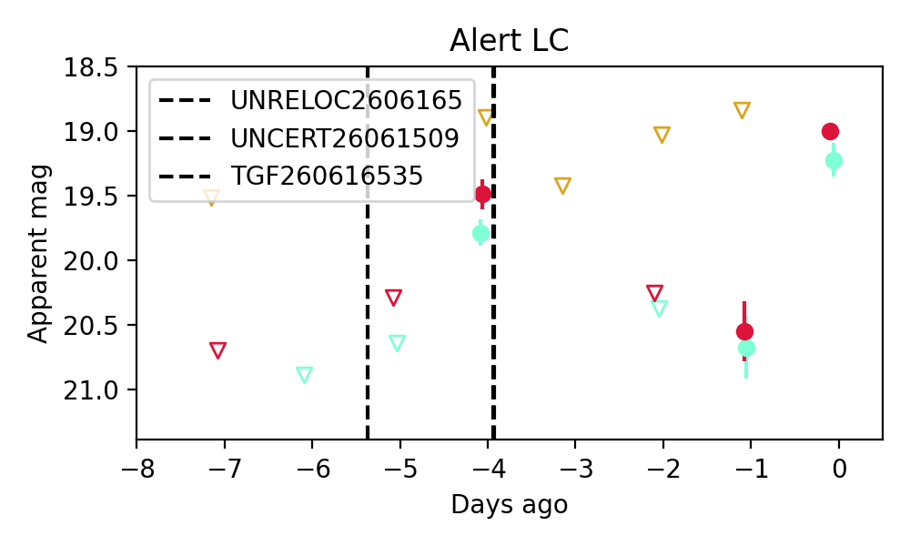